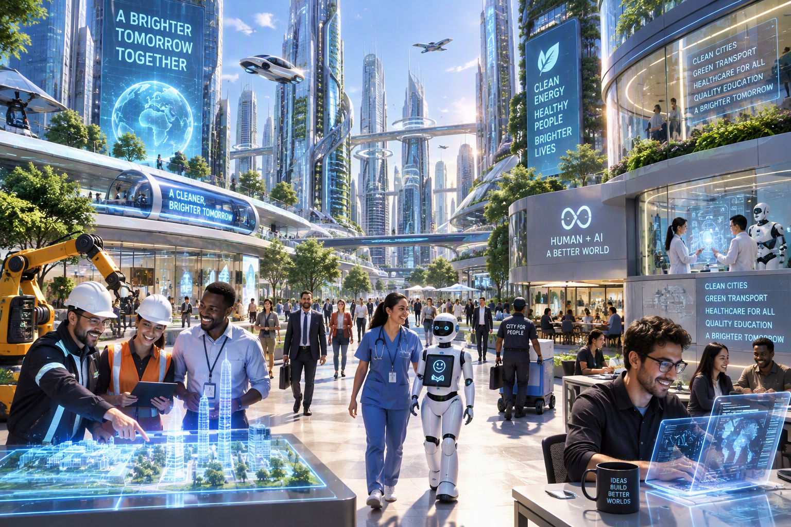

Nuestra Ciudad

Te presentamos la ciudad Cyber City, diseñada para ofrecerte un hogar futurista. Olvidate de ir a hacer las compras, de la inseguridad y de las malas conexiones a internet.
Viví con toda tu familia desde 600 USD al mes, con robots que mantienen limpia la ciudad todos los días y drones o robots repartidores que llevan pedidos a tu puerta sin costo de envío.
Conocé más sobre nuestra historia...Educación gratuita para todos

Contamos con educación gratuita en todos los niveles dentro de la ciudad: chicos y jóvenes acceden sin costo a cada escuela y universidad.
Disponemos de 15 escuelas y 2 universidades con amplias ofertas académicas, además de eventos culturales centrados en música, deporte y gastronomía local e internacional.
Deportes

La ciudad cuenta con clubes distribuidos en distintos sectores y un sistema de transporte rápido que permite moverse con facilidad entre sedes.
El fútbol y los esports lideran la escena local, con cientos de jugadores competitivos en títulos como FIFA, League of Legends y Counter-Strike.
El acceso a infraestructura y entrenamiento impulsa el desarrollo competitivo y genera eventos que fortalecen la cultura y la economía de Cyber City.
¿Necesitás un empleo?

Ofrecemos oportunidades laborales para los habitantes con opciones orientadas a distintos perfiles y preferencias personales.
Si aún no definiste tu rumbo laboral, podés sumarte al programa de Trabajadores en Desarrollo para probar distintas áreas y descubrir qué rol te gustaría desempeñar.
¿Querés vivir acá y no sabés cómo hacer?
¡Mudarte al futuro es más fácil de lo que pensás! El proceso de postulación es 100% digital, seguro y te llevará menos de 10 minutos. Buscamos personas con ganas de innovar, trabajar y formar parte de una comunidad única en el mundo.
El proceso en 3 simples pasos
Completá el formulario
Hacé clic en el enlace de abajo e ingresá tus datos personales, formación y preferencias de convivencia.
Selección de vivienda y empleo
Nuestro sistema inteligente te asignará opciones de hogares y puestos de trabajo adaptados a tus gustos.
¡Bienvenido a bordo!
Una vez aprobado tu perfil, recibirás tu pase digital de ciudadano y las instrucciones para tu mudanza.
¿Todo listo para empezar? Registrate ingresando tus datos en nuestro portal oficial:
Comenzar Registro de Ciudadano¿Necesitás ayuda con el proceso?
No te preocupes. Si tenés dudas sobre los requisitos o no sabés cómo completar algún campo, podés mirar nuestro video tutorial de inscripción paso a paso: